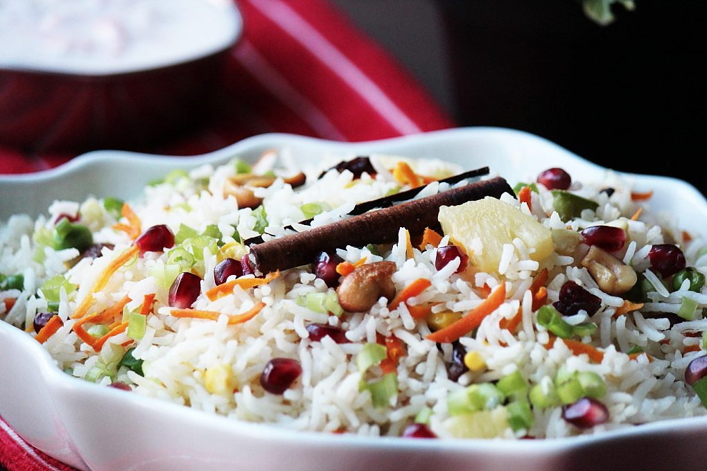

Prep15 min
Cook25 min
Active40 min
Serves4
Difficultyeasy
Contains: milk, tree nuts
Checked against the ingredient list for ten allergens: milk, egg, fish, crustaceans, tree nuts, peanuts, sesame, mustard, soy and gluten. Brands vary, so read the label on anything new to you.
Ingredients
Quantities for 4.
- 2 cups, soaked 30 min Basmati Rice
- 1 cup Milk
- a good pinch Saffron
- 4 Cardamom
- 1 piece Cinnamon
- 4 Clovesoptional
- 1 Bay Leafoptional
- 1 tsp Fennel Powderoptional
- 2 tbsp Almonds
- 2 tbsp Cashewoptional
- 2 tbsp Raisins
- 1/2 cup seeds Pomegranateto finishoptional
- 1 tsp Sugaroptional
- 3 tbsp Ghee
- to taste Salt
Cookware
stovetop
Before you start
- The sweetness should be barely there. This is a foil for rich meat dishes, not a dessert. One teaspoon of sugar for two cups of rice is enough.
- Warm the saffron in the milk for ten minutes before using; dropping threads into the pot does almost nothing.
Method
- Warm the milk and steep the saffron in it.
- Fry the nuts and raisins in ghee until the nuts colour and the raisins puff. Lift out and reserve.
- In the same ghee, bloom the whole spices, then add the drained rice and turn it gently for 2 minutes.Gently. Soaked grains break easily.
- Add the saffron milk, 2.5 cups water, sugar and salt. Bring to a boil, then cover and cook on the lowest heat 12 minutes.
- Rest, covered and off the heat, a further 10 minutes before lifting the lid.
- Fork through the fried nuts and raisins and scatter pomegranate over the top.
Storage
Keeps 2 days refrigerated. Reheat covered with a splash of water. Add the pomegranate fresh rather than storing it in the rice.
Nutrition Low estimate
Medium protein: 12 g a serving, 8% of the calories
| Per serving199 g | Per 100 g | |
|---|---|---|
| Calories | 584 kcal | 294 kcal |
| Protein | 12.1 g | 6 g |
| Carbohydrate | 90.5 g | 46 g |
| of which sugars | 11.4 g | 6 g |
| Fibre | 3.6 g | 2 g |
| Fat | 19.5 g | 10 g |
| of which saturated | 8.1 g | 4 g |
| of which unsaturated | 9.9 g | 5 g |
Ingredients given to taste count as zero, so the real figures run a little higher. Estimated from raw ingredients using USDA FoodData Central.
Times, yields, allergens and nutrition are guidance. Use your own judgement on doneness and on storing. More in About.